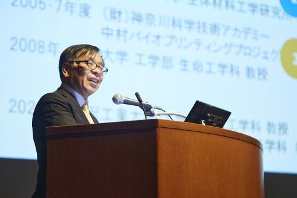
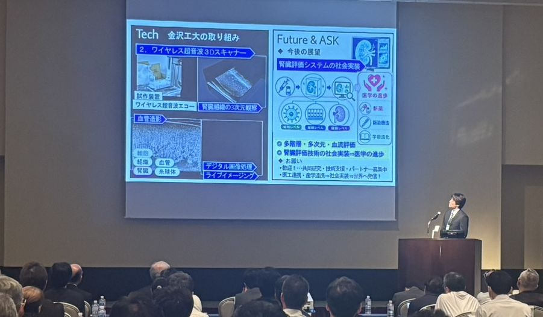
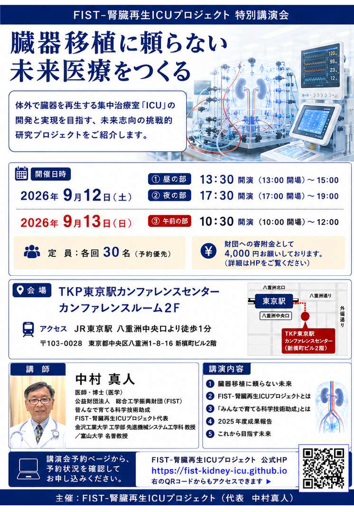
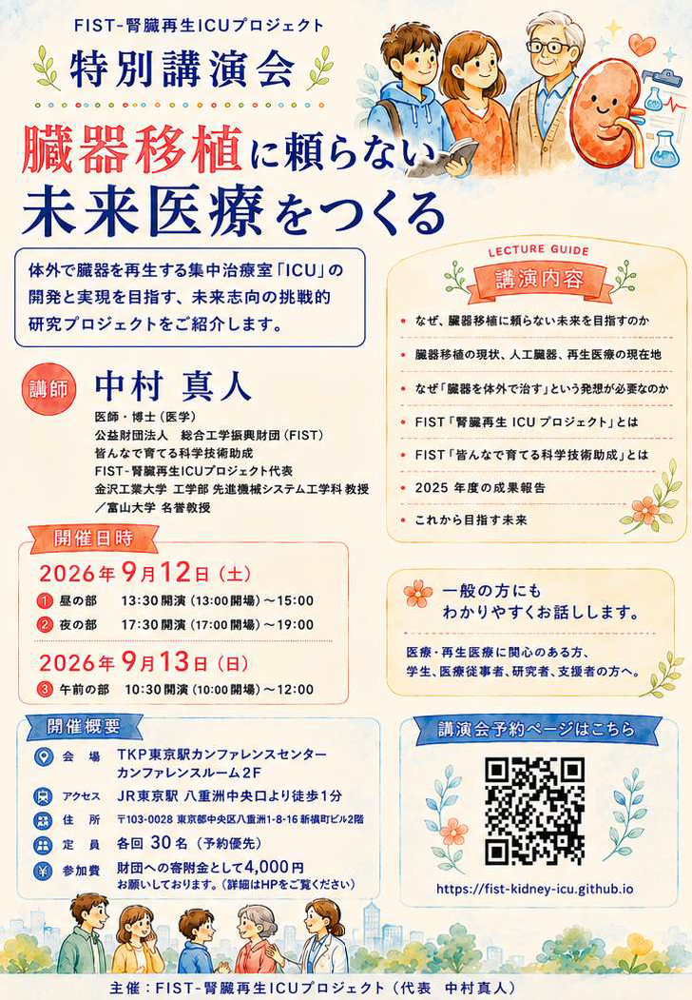

03
学会発表・招請講演の活動報告
- 金沢工大チームが第65回日本生体医工学会大会（仙台）で学会発表しました。
- 富山大学チームが第23回泌尿器科再建再生研究会（東京）で学会発表しました。
- 京都大学大学院医学研究科 田畑泰彦教授の研究室のオンラインセミナーで招請講演しました。
- 第56回日本腎臓学会西部学術大会（金沢）で特別講演を行いました。

ISHIKAWA Interdisciplinary Fes. 2026
、ISHIKAWA Interdisciplinary Fes. 2026 にて、研究室から大学院生が発表しました。イベント詳細


FIST-腎臓再生ICUプロジェクト 特別講演会
、東京にて開催しました。会場：TKP東京駅カンファレンスセンター カンファレンスルーム2F。講演会ウェブサイト



第56回日本腎臓学会西部学術大会（金沢）
、特別講演を行いました。
演題：体外臓器再生（ECOR）が拓く臓器移植に頼らない未来 ― 臓器再生プロセス工学への挑戦 ―
会場：第1会場（石川県立音楽堂 コンサートホール）大会プログラム